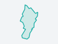

비닐하우스 2026
프로젝트장 LX 직원 · 구성원 0 · 1회차 · 만든 날 10.01 · 마지막 움직임 10.01 19:18
프로젝트 개요참여자기록
학습데이터 정보
표본 묶음 1 · 09.30 올림학습데이터 구축- 올린 이미지200장학습용 160 · 검증용 40
- 라벨 있는 이미지200장라벨 없는 이미지 0
- 라벨 개수3,453개폴리곤 · 클래스 4
클래스별 이미지 수
- 경작지181장 · 라벨 1,425
- 건물144장 · 라벨 1,183
- 비닐하우스130장 · 라벨 669
- 주차장40장 · 라벨 176
표본 상태
- 학습용 160
- 검증용 40
- 뺀 이미지 0
- 아직 라벨 없음 0
표본 20건 보기 0/20 — 4단계 AI 결과 보기에서 봅니다.
서버에 더할 것 라벨 없는 이미지 수 — 지금은 라벨이 붙은 파일만 올라옵니다
프로젝트 정보
서비스 카드- 서비스1개공개 · 1.0판 · 09.30
- 학습3번끝 2 · 실패 1
- 시범 적용3곳운영 0곳
- 프로젝트 사용량10.2MB내 저장 용량 29.8 MB 가운데 34%
- 진행 현황
6단계 가운데 5 끝 · 표본 확인 남음올림구축학습확인공개관리
사람 · 서비스
프로젝트장 LX 직원 · 구성원 0 구성원 더하기 넘기기
서비스 비닐하우스 서비스 1.0판 · 공개 09.30 · 기관 신고 0 · 보고서 0
끝난 프로젝트는 보관할 수 있습니다 — 기록은 지워지지 않습니다. 보관
최근 작업 이력
자동 기록 · 메모 · 파일기록- 10.01 08:58프로젝트 만듦LX 직원끝
- 09.30 15:35모델 등록 승인LX 관리자끝
- 09.30 15:33학습 끝2번째 학습 · LX 직원끝
- 09.30 15:12학습 실패다시 학습 · LX 직원실패
- 09.30 15:05증평군 적용 승인시범 · LX 관리자끝
기록 11건 · 메모 0 · 파일 0모두 보기
적용 지역 3곳
이 서비스가 돌고 있는 곳 · 마지막 학습 09.30 15:33다른 지역에 적용 증평군2023년 항공영상 · 시범AI 탐지 725건
증평군2023년 항공영상 · 시범AI 탐지 725건
함양군2023년 항공영상 · 시범AI 탐지 42,214건 남원시2025년 드론영상 · 시범 · 2023 항공영상 새로 들어옴 10.01AI 탐지 132,310건
남원시2025년 드론영상 · 시범 · 2023 항공영상 새로 들어옴 10.01AI 탐지 132,310건
다시 학습할 근거 — 새 영상 1 · 기관 검토 요청 0 · 표본 확인 0/20표본을 다 봐야 다음 회차를 시작할 수 있습니다재학습 시작